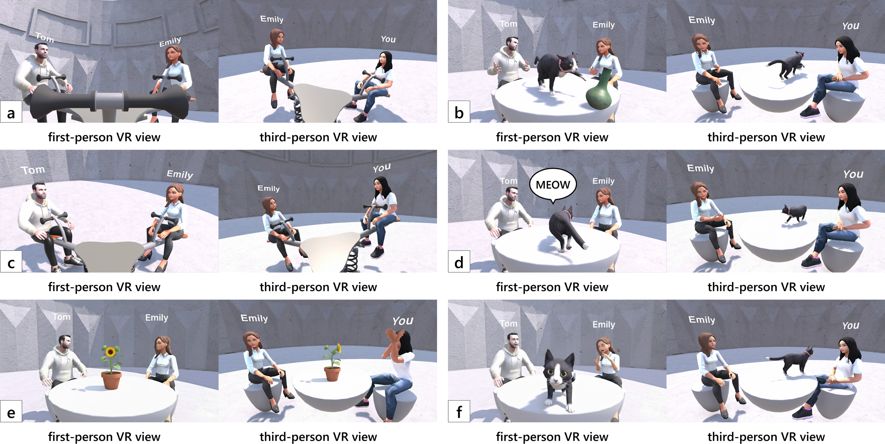
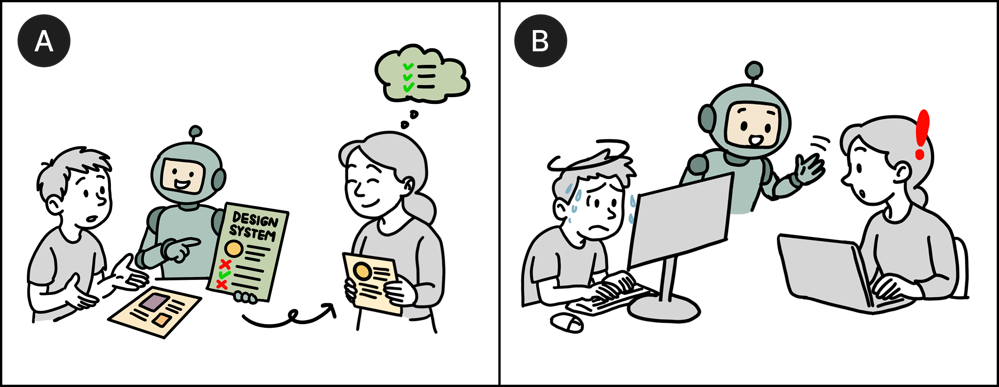
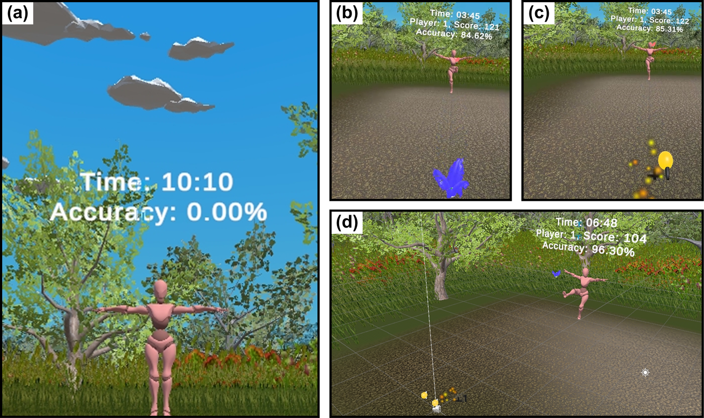
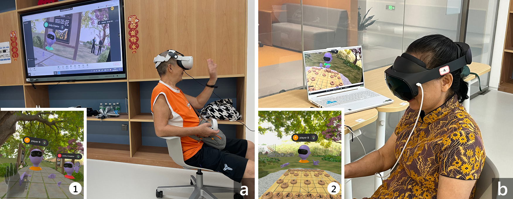
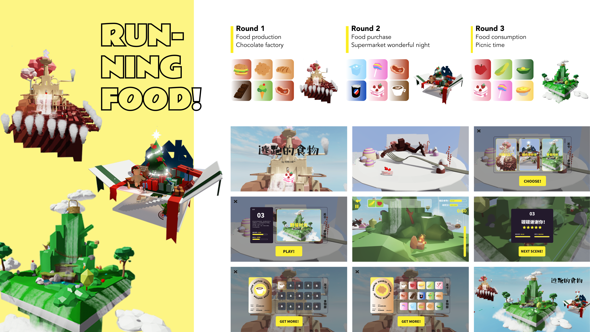
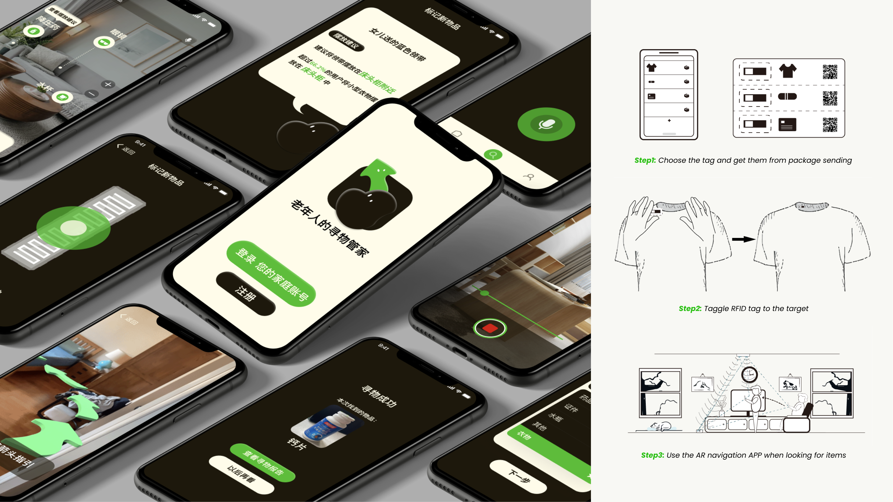

GROUP 2027 In Proceedings of the ACM International Conference on Supporting Group Work
* equal contribution, # corresponding author.

GROUP 2027 In Proceedings of the ACM International Conference on Supporting Group Work

IJHCI In International Journal of Human–Computer Interaction [Paper]

IMWUT 2026 In Proceedings of the ACM on Interactive, Mobile, Wearable and Ubiquitous Technologies [Paper]

CHI 2025 In Proceedings of the CHI Conference on Human Factors in Computing Systems [Paper]

VINCI 2024 In Proceedings of the International Symposium on Visual Information Communication and Interaction [Paper]
Before diving into HCI research, I am an engineering & design student focusing on Human-centered Systems Design.
For more details about my previous work, you can refer to my portfolio.

Mechatronics. UX/UI. Healthcare.
Team Project at Tongji University. 2022.

Game Development.
for Tencent. 2021. [Video]

AR Development. UX/UI. Older Adults.
Team Project at Tongji University. 2022. [Video]

UX/UI. App Development.
for BOSCH. 2022. [Video]

Interactive Installation.
Team Project at Tongji University. 2021. [Video]